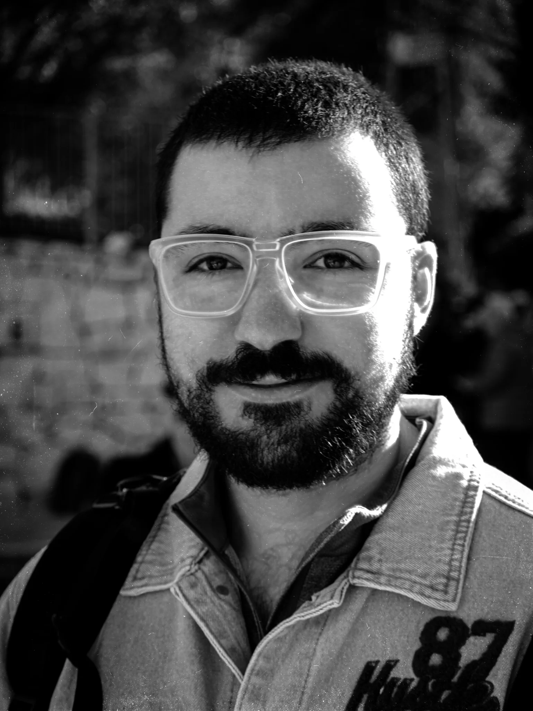

Gal
Goby
Gaul
From fixing “junk” electronics to fixing the world.
acoustics · mechanics · measurement · control systems

From fixing “junk” electronics to fixing the world.
acoustics · mechanics · measurement · control systems